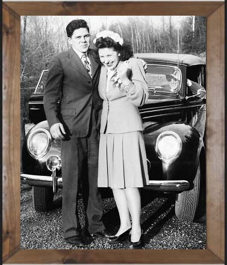

The Edible Art Cafe started in 1949 in Chicago by then 31 and 27 year old Giovanni and Marosa Giorgio. The idea for the Cafe stemmed from the couple's love and longing for the coffeehouses in their native Italy. Marosa, an artist by trade, incorporated her love of the arts into her baking. Slowly, they build their presence in the community. They eventually opened their second location 25 years later in 1974.
About us
In 1980, Giovanni and Marosa retired. Management went to their only daughter Jennifer Rivera (born Jennifer Giorgio) at age 29. Essentially being raised in the Cafe, Jennifer felt it was only natural for her to take up the reigns from her parents. Marosa was quoted in saying about her daughter, "...She's just like him[Giovanni]. Loud, proud and stubborn as all hell." Her ambitious and energetic personality would transfer into the Cafe, attracting the attention from news organizations such as the Chicago Tribune, to celebrities such as Bernie Mac, Robin Williams and Jim Carey. In April of 2010, the Edible Art Cafe made Chicago Magazine's "Top 40 Chicago Restaurants Ever" at rank 16.
In 2012, Jennifer decided to step back and leave her daughter, Scarlet Rivera, in charge of operation. Scarlet is the youngest of 3 children and only 22 years young when she took over the business. She hit the ground running, wasting no time in bringing the Cafe into the internet age. Following her grandmother's love of art, Scarlet thought it best to revamp the art aspect of the Cafe. She incorporated a laser cutter to create stencils for drinks and edible ink printed on either rice paper or frosting sheets to create custom images on menu items. Scarlet would upload the process and the finished products on the business' social media. The subject of the videos ranged from classical works of art, to celebraties, to anime and to memes. She eventually amounted an astonishing 18,000,000 likes on Facebook, 85 thousand followers on Instagram and 240 thousand subscribers on YouTube.

Edible Art Café
5500 St Louis Ave, Chicago, IL 60625
773 - 583 - 4050
edibleartcafe@neiu.edu